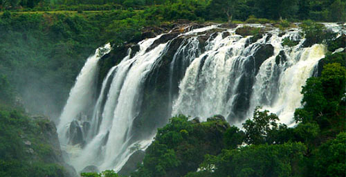

Shimoga, officially renamed as Shivamogga,[2] is a city and the district headquarters of Shimoga District in the central part of the state of Karnataka, India. The city lies on the banks of the Tunga River. Being the gateway for the hilly region of the Western Ghats, the city is popularly nicknamed as "Gateway of Malnad". The city is 569 m above sea level and is surrounded by lush green paddy fields, arecanut and coconut groves. The population of Shimoga city is 322,428, consisting of 161,978 males and 160,450 females, as per 2011 census.
The name of the city is derived from the term "shivmoga", "History behind the city name due to story that the Lord Shiva drunk Tunga river water using Mogge at the city, hence the city name Shiva-mogga". An alternative etymology is that the name is derived from the term "Sihi-Mogge", meaning "sweet pot". The district formed the southern tip of Emperor Ashoka's Mauryan Empire in the third century BC.[citation needed] It was ruled during later centuries by the Kadambas (4th century), Chalukyas (6th century), Gangas, Rashtrakutas (8th century), Hoysalas (11th century), and the Vijayanagara rulers (15th century). The city got an independent identity under the Keladi Nayaka rule during the 16th century[citation needed], reaching its pinnacle under the rule of Shivappa Nayaka. From the late 17th century onwards, the city was a part of the Kingdom of Mysore until the independence of India in 1947, when Mysore merged into the Republic of India. Entry: Rs.10